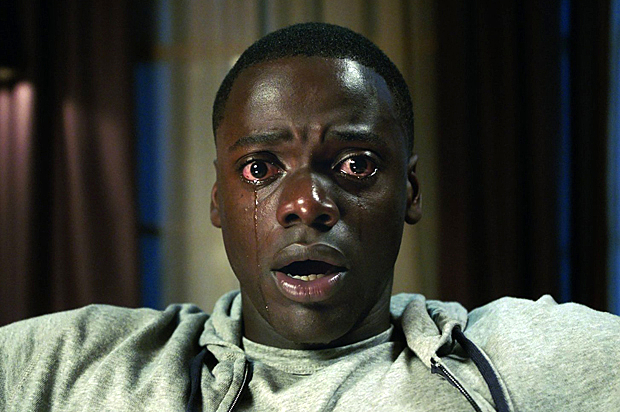
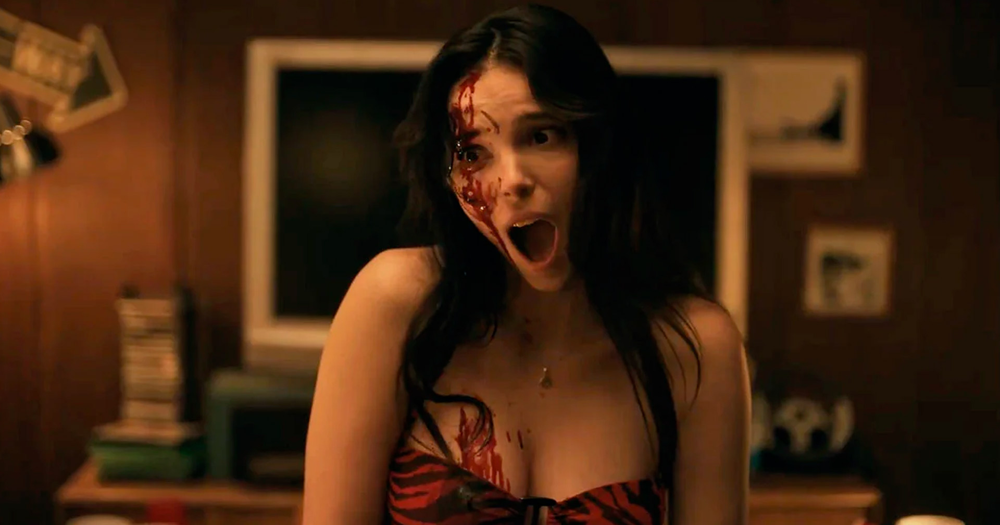
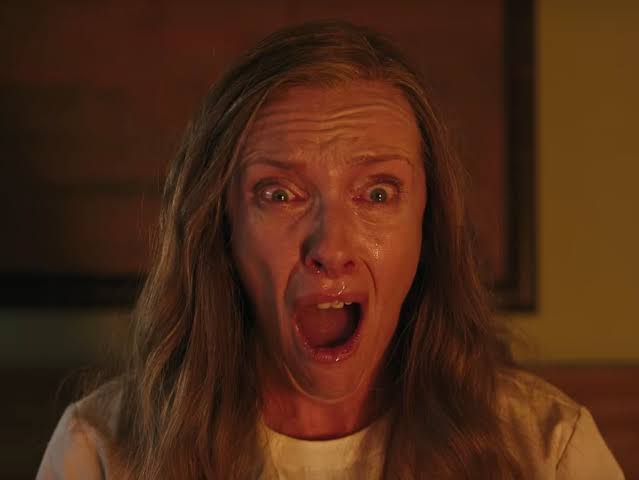

Corra!
Dirigido por Jordan Peele, é um suspense psicológico e terror social que acompanha Chris Washington (Daniel Kaluuya), um jovem fotógrafo negro que viaja para o interior para
Aqui estão alguns dos filmes mais bem avaliados de terror para você assistir nas férias!
← Voltar aos gêneros
Dirigido por Jordan Peele, é um suspense psicológico e terror social que acompanha Chris Washington (Daniel Kaluuya), um jovem fotógrafo negro que viaja para o interior para

é um terror psicológico sobre as consequências sombrias de um desejo proibido. O protagonista, Bear (Michael Johnston) é um jovem tímido que trabalha em uma loja de discos e nutre uma paixão secreta e antiga pela sua amiga de infância e colega, Nikki (Inde Navarrette).

Hereditary (no Brasil, Hereditário) acompanha a família Graham após a morte de Ellen, a matriarca reservada e misteriosa. A partir do falecimento dela, segredos perturbadores e eventos sobrenaturais começam a assombrar seus descendentes.
Dirigido por Ari Aster, acompanha Dani (Florence Pugh), uma jovem traumatizada pela perda trágica de sua família. Para tentar distraí-la e lidar com uma crise no namoro, ela se junta ao namorado Christian (Jack Reynor) e aos amigos dele em uma viagem para uma comunidade rural isolada na Suécia, convidados por um colega chamado Pelle para celebrar um festival de solstício de verão que ocorre a cada 90 anos.